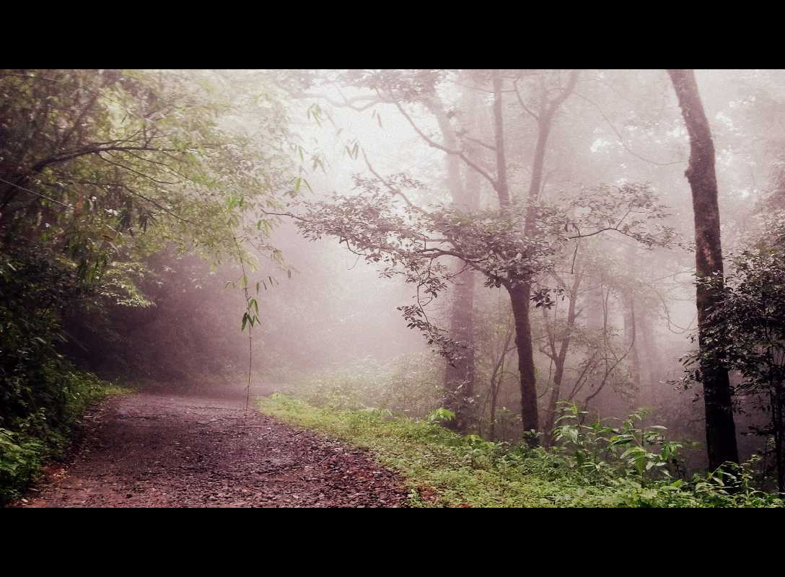
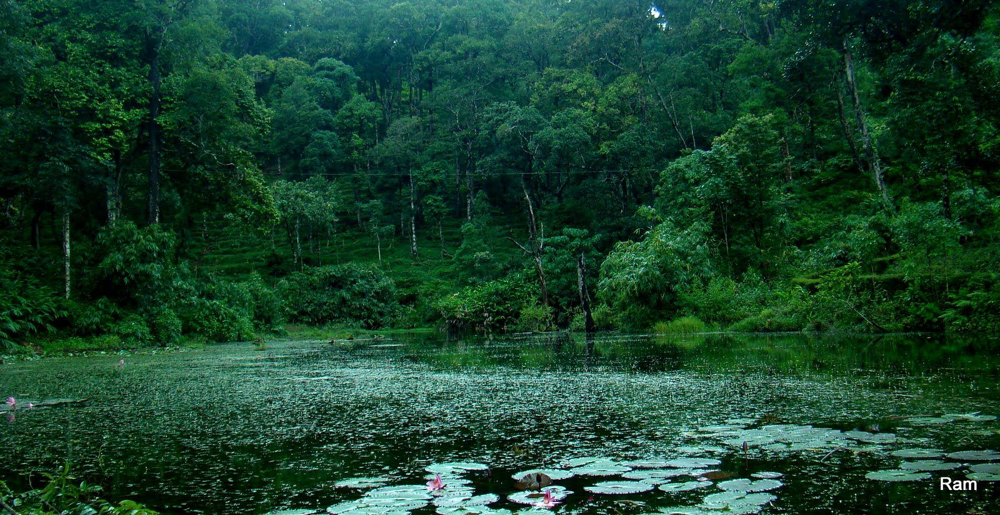
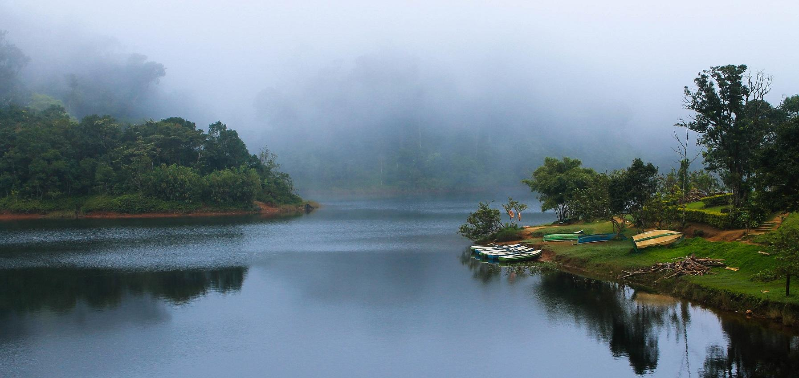
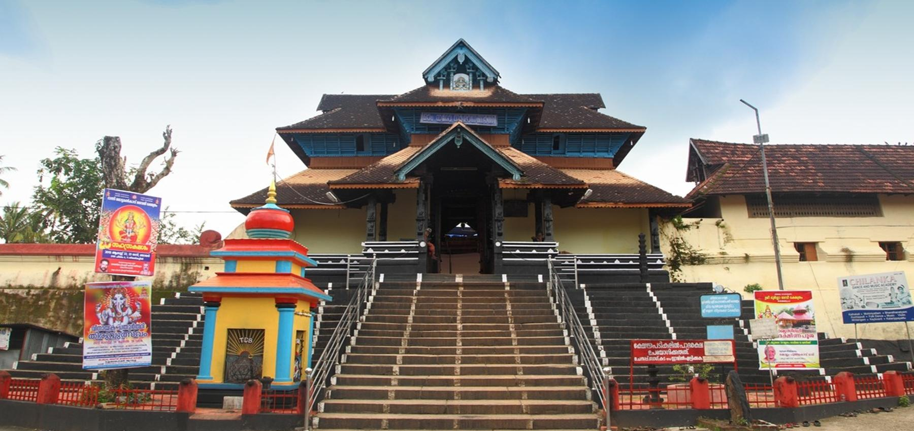
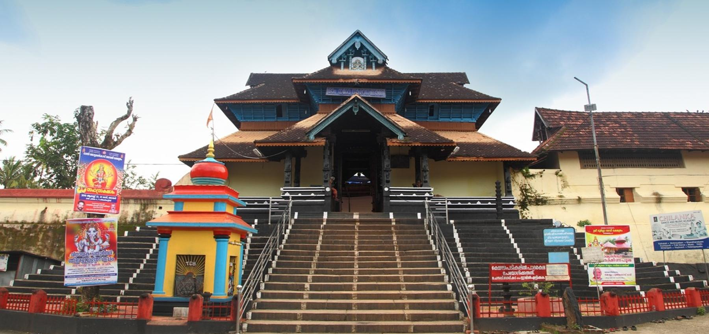
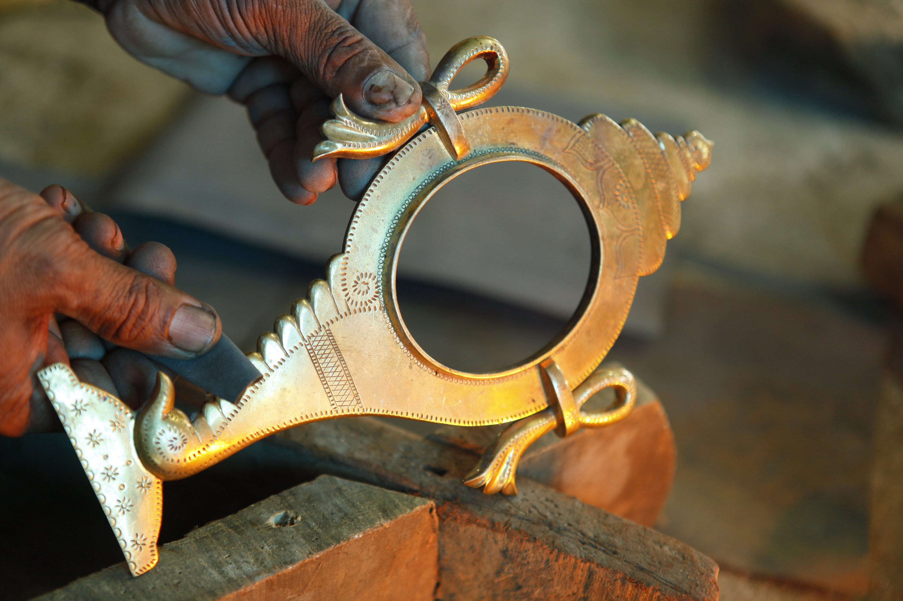
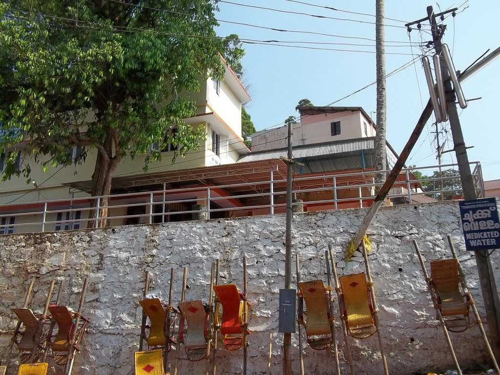
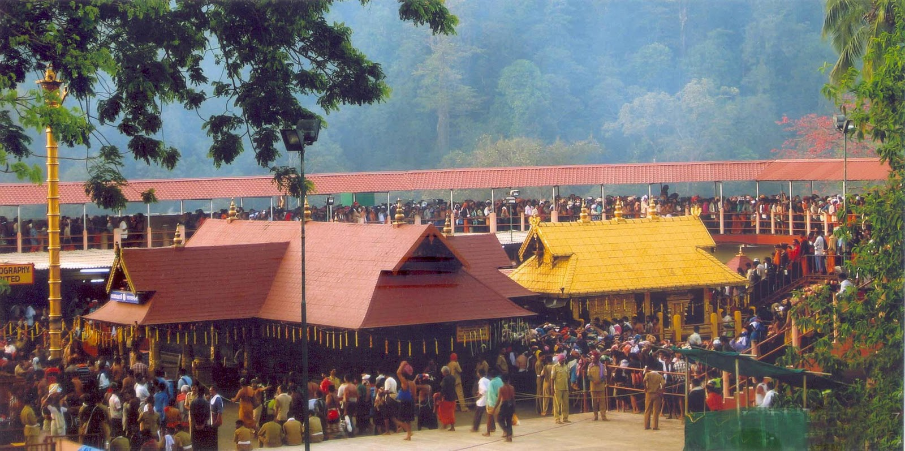
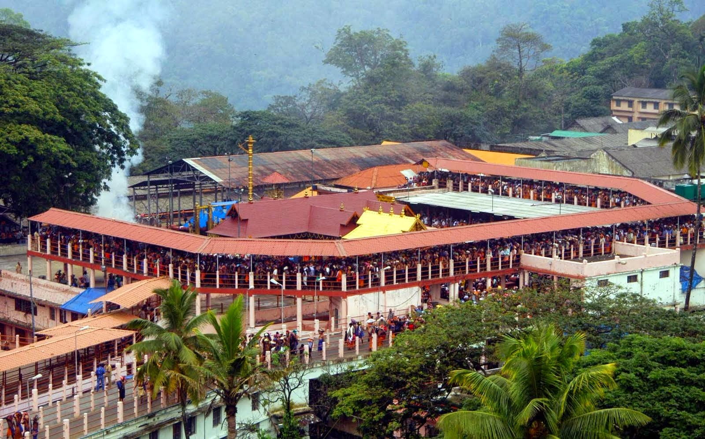

PATHANAMTHITTA - Pilgrim Capital of Kerala
1. GAVI
  The place is rich in flora and fauna. There are hills and valleys, tropical forests, sprawling grasslands, sholas, cascading waterfalls and cardamom plantations. Endangered species including the Nilgiri Tahr and Lion-Tailed Macaque are often sighted at the outskirts of Gavi. With more than 260 species of birds including the Great Pied Hornbill, Woodpecker and Kingfishers, Gavi is literally a paradise for birdwatchers.
Some of the breathtaking viewpoints at Gavi like the Valley View offer a spectacular view of the deep ravine and forest below. From Kochu Pampa, a point near Green Mansion eco-lodge, one can track the grazing Nilgiri Tahrs.
Another unique feature of Gavi is camping in the forests. One can pitch a tent in the camping site, which is a rarity in many Indian forests. As the dusk stretches into the silence of the night, one can feel the presence of wildlife in the middle of nowhere, an experience that cannot be explained in words. There are also tree top houses where one can enjoy avian life to the fullest.
Active involvement of tribals in Gavi makes it a unique venture of its kind in the country. Traditional knowledge of the forest and its way of life helps Gavi to sustain its surroundings in its original state.

Gavi is bound to cast its magical spell on every visitor and is surely a place that should not be missed in one's lifetime. Gavi is pristine, and it belongs to the wild, which is a reminder that visitors are responsible for their intentions and actions, which will have a bearing on the upkeep of Gavi for a long time to come.
2. ARANMULA
 
 Aranmula, a heritage village situated on the banks of the famous river Pamba is famous for diverse attractions. The Parthasarathy temple situated in the heart of Aranmula gave the place its name. This is the most important of the five temples built by the Pandavas. The Krishna temple here is an important pilgrim centre which attracts large number of devotees.
During Onam a Snake Boat Race is held here as part of the festival during the period August / September. The famous snake boat race is conducted at the stretch of River Pamba. The snake boat resembling a snake with a length of about 100 ft and height of about 20 ft is a wonderful.

Aranmula is also a training centre of traditional arts and crafts of Kerala. Vijnana Kalavedi at Aranmula imparts training in Kathakali, classical dances, classical music as well as Kalaripayattu, the martial art form of Kerala.
3. SABARIMALA
  Sabarimala is a Hindu pilgrimage centre located at the Periyar Tiger Reserve in the Western Ghat mountain ranges of Pathanamthitta District, Perunad grama panchayat in Kerala, South India. It is one of the largest annual pilgrimages in the world, with an estimated 1 million devotees visiting every year. Sabarimala is believed to be the place where the Hindu God, Ayyappan, meditated after killing the powerful demoness, Mahishi. Ayyappan's temple is situated amidst 18 hills. The temple is situated on a hilltop at an altitude of 468 m (1,535 ft) above mean sea level, and is surrounded by mountains and dense forests. The dense forest, (Periyar Tiger Reserve), around the temple is known as Poomkavanam. Temples exist in each of the hills surrounding Sabarimala. While functional and intact temples exist at many places in the surrounding areas like Nilackal, Kalaketi, and Karimala, remnants of old temples survive to this day on remaining hills.
Every year, millions of pilgrims, from different parts of India, especially those from South India flock to this hill shrine to offer prayers and seek the blessings of the presiding deity - Lord Ayyappa, popularly worshipped as Swami Ayyappan. Of late, the shrine is also visited by devotees from foreign countries like Russia, countries in Europe and U.S.A. The temple cannot be visited by women who have reached puberty. They can either visit the shrine before that stage or after attaining menopause.

The annual pilgrim season to Sabarimala begins with the Mandalakala season, which commences usually in the months of November-December followed by Makaravilakku during December-January. The sighting of Makaravilakku, the divine light that appears on the Ponambalamedu, a hillside located opposite to the temple, on a particular day during the Makaravilakku season is considered very auspicious.